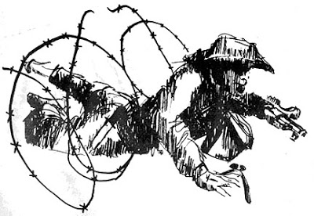
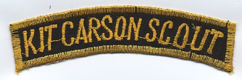

April is a month of bittersweet anniversaries. 19 April of course marks Lexington and Concord, the Warsaw Ghetto, Waco, Oklahoma City, and in certain drunken ATF debaucheries, the birthday of their patron saint, Elliott Ness. The picture above marks another event, the fall of Saigon in 1975. This photo was taken 29 April. Saigon fell the next day on the 30th. Phnom Penh, Cambodia had fallen about two weeks before.
I missed marking this anniversary this year. I don't know why. The memories always hang heavy on my heart. This is not merely because it was hardly my country's finest hour, but because I bear personal guilt for it. You see, as the NVA gradually overran South Vietnam and the Khmer Rouge overran Camodia, I cheered the fall of every province, marking them on a map. This was during my Benedict Arnold period, when I was a communist and an avowed enemy of the constitutional republic of the United States. As a member first of the peacenik anti-war movement which I joined in 1967, then later the Students for Democratic Society, the Young Socialist Alliance, the Socialist Workers Party, the Workers Action Movement and finally the Maoist Progressive Labor Party, I had demonstrated, leafleted, marched, rioted, been tear gassed, billy clubbed and briefly, arrested (but later released without charges), eight years of street-level radicalism, all with an eye toward this day.
Toward the end, I became a member of the PLP's "secret party," dropped from public view and on instructions began to organize a "worker's militia" in central Ohio. We'd start out vetting new members by having them break into National Guard armory parking lots and slash vehicle tires. In the end, we'd rob dope dealers to raise the money to buy weapons, all kinds of weapons. We were very good at what we did. And very, very lucky. Don't believe me? Most of my "Benedict Arnold" period papers are part of a collection at the Ohio Historical Society. Look it up. You can look up the statute of limitations too. Nobody died. Like I said, we were very, very lucky.
So when Cambodia and South Vietnam fell, I was one of the happiest traitorous bastards around. I just hoped "the Revolution" would start here in my lifetime. Yeah, I was that stupid.
I suppose I would have continued on being terminally stupid until I became stupidly dead, if it hadn't been for a kindly old ex-Wehrmacht surgeon named Richter who, at the end of his life, decided to wrestle the devil for my soul.
My day job, when I wasn't buying or stealing guns for the communists, was as a hospital aide at University Hospital in Columbus, Ohio. I was on my first marriage, then, though my son Matt had not yet been born. Richter (I am ashamed to say that at this remove I am not even absolutely certain that was his real last name -- I always addressed him as "Herr Doktor" and what few papers, reading lists and so that he had given me were apparently discarded during the split with my ex-wife) was a patient of mine, come to OSU to get a second opinion from an American neurosurgeon he trusted.
It was the two weeks between Christmas, 1976, and the New Year, 1977 that this occurred. Nothing much happened over the holidays, and here he was, stuck in another country, far from the Germany he loved. I wonder now if he saved me because he was bored and had nothing better to do. He knew that I needed saving because he was a major fan of the United States system, which had just that year seen its bicentennial. That was the question that he posed to me first, I know.
"What," Herr Doktor asked in that slightly accented and very precise English that he spoke, "did you think of the 200th anniversay of your independence?" He always had this half-smile, but with a professorial air that demanded manners. I had a Czech refugee for a history professor once before (1971) who had the same mein. Like Vlad Steffel, Herr Doktor commanded respect.
I blew him off, though, with a stupidly shallow answer about America as a force for evil in the world which would, I was sure, soon be turned back by the forces of, I probably used the commie term "people's war." Herr Doktor was mildly amused and offered to dissuade me of that theory if I would just show him the courtesy of reading some books and articles and discussing them with him during and after my shifts. I agreed. It was the unintentionally smartest thing I ever did in my life.
We began with The Road to Serfdom by Hayek. I have always been a quick reader, but my mind rebelled at the points where Hayek's analysis diverged from my own adopted dialectical materialism, which is to say, everywhere. The first time I tangled with Herr Doktor was in the cherished notion I had that it was Soviet Communism that defeated the Nazis. The Communists were the real heroes of World War II, didn't he know that?
Herr Doktor brought me up short with the observation that he had seen that conflict up close and I was dead wrong. For two days, I think, we went back over the events of his life. His German Catholic family, always doctors or academics for hundreds of years. The decadent Weimar Republic, the street fighting, the longing for order, Hitler's rise, the early clashes between the Nazi Party and the Catholic Church, the sellout of the German Catholics by the Pope, how he missed the Hitler Jugend because of his age but was impressed into the Wehrmacht as a surgeon in 1939, all of these were mere prelude to his vivid description of the tragedy of millions of young men dying in the snow, killing each other for two sides of the same collectivist coin. His escape from Stalingrad on one of the last Junkers to leave the kessel. The crimes of the Nazis. The crimes of the Soviets, and later of the East German communists. "Two parties, same faces," he pointed out. Any Nazi who wanted to live in the new system had merely to declare his conversion to Marx, Lenin and Stalin and become what Eric Hoffer dubbed a "true believer." Hoffer was another title Herr Doktor recommended.
We got fairly well along in my conversion before he left to go home to Germany to die. It was ironic that it took a foreigner to teach me how little I really knew about my own country's history. I dove into his reading list, putting it together with things in the press, things I'd observed, first as a radical then as a communist. This wasn't trading one commissar for another gauleiter or vice versa. It was becoming educated in the Anglo-American concepts of individual liberty, property, commerce and polity. It was being reminded of the Judaeo-Christian roots of all of it. It was from Richter that I realized first that while a man cannot choose the time he lives in, he can choose how he lives up to that time. And yes, Herr Doktor's reading list included Rand, Locke, Adam Smith, Tolkein and C.S. Lewis.
No one analysis fit the reality of the world, said the Doktor, you must evaluate the facts and the truth, which is sometimes unsupportable by mere facts, and make your own judgments.
The sum total of what Herr Doktor taught me subverted completely my belief in communism, which from my own experiences had become somewhat cynical and jaded anyway. I handed off my assignment and, more's the pity, the arms dumps, to my second in command. If I hadn't he probably would have killed me. He wanted to anyway, me being a traitor to the class struggle and all. (That, plus the fact that I had in my head enough evidence to send about six men and three women to federal prison for a very long time.)
Of course I didn't tell them that this was because I had a crisis of conscience. I lied and told them I was just burnt out and that my wife was about to divorce me. This was more or less true, but still a lie. However, the first thing you're taught when you get to be a killer tomato (red thru and thru) is that it is OK to lie to anybody about anything if it advances the party's goals. So given that, lying to liars was even expected, in a way.
Anyway, I got out and never looked back. That didn't mean I wasn't constantly haunted by the reality of what I had done.

Chieu Hoi and Hoi Chanh.
Flip back up to that first image above, the evacuation of the American embassy in Saigon. Consider the awful reality of two countries left to people who were hardly little Jeffersonian democrats, and who set about proving that in the worst possible ways after our choppers had gone.
I once did a radio show with Dr. Russ Fine, who then had the evening call-in show on a certain station here in Birmingham. David Horowitz' book Radical Son had just come out, about his conversion from being a red diaper baby into a real American. David was pimping his book and Russ was happy to talk about it and to have someone experienced from that period of history to chat with Horowitz as someone with similar background.
After exchanging bona fides about the extent of our previous sins, I asked him the question that had, since my encounter with Herr Doktor Richter, most preyed on my own mind:
"David," I asked, "do you ever feel Benedict Arnold looking over your shoulder?" He was quiet for a moment, you could hear the slight crackle of that long phone line to California. Then he said, slowly, solemnly, "Yes."
"But if you're like me, you'll never get caught on the wrong side of your faith or the Constitution again, will you?"
"No," he replied firmly, "I won't."
"Chieu Hoi," I replied, "Hoi Chanh."
David understood the reference.


Chieu Hoi means "open arms" in Vietnamese, the name of a program designed to recruit ex-communists to the South's anti-communist fight. Someone who entered the Chieu Hoi program became a Hoi Chanh, a returnee. In Vietnam, many became Kit Carson scouts and worked alongside American and South Vietnamese troops.


And believe me, there is no greater anti-communist than an ex-communist. We know all the lies, first hand.
We also know that we can't go back.
We have burned our bridges and will live or die on the ground we have chosen. Of course twelve-step ex-leftists like Horowitz and me aren't brave at all compared to the Kit Carsons, nor did we recant in the expectation that we were joining a losing side like George Orwell or Whittaker Chambers. THOSE guys changed sides in the belief that while it was the right thing to do, they were probably joining a losing cause. Both were under the impression that either Sovietism or fascism was going to win in the end. But still they denounced the lies and stood on the truth, expecting death at the wall or in a ditch rather than reward. (Orwell's Homage to Catalonia and Chambers' Witness were both on Herr Doktor's list.)
And one other thing. As near as I can tell without a god-like glimpse into other men's souls we are all, we ex-communists, motivated by guilt at what we did in the name of totalitarianism. This guilt we must expunge by our every action for the rest of our lives. We cannot backslide, we cannot be fooled, or fool ouselves, into believing the lies ever again.
Don't believe me? Let me give you an example of the depth of my own guilt, something I am reminded of often, but particularly on anniversary days in April.
"Vous les Americains Sont Pires que les Francais."

"Vous les Americains Sont Pires que les Francais" is the title of Chapter 27 of Never Fight Fair!, an oral history of the SEALS by Orr Kelly. Chapter 27 is a reminiscence of William G. "Chip" Beck, who served as an advisor with the Cambodian Army as it fought a desperate battle against the Khmer Rouge rebels from January 1974 until that fatful April 1975. Beck tells the story of the heroic resistance of the anti-communist Cambodians and especially of one man, Khy Hak who most exemplified and personified that resistance. An excerpt:
I was an advisor to the 11th Cambodian Brigade at the time. I was the only American in Kompong Thom, this little town in central Cambodia. There were two other foreignrs there -- a Norwegian doctor and a French priest. He had been there twenty-eight years and spoke Cambodian like a native. We used to call his congregation "the Christian soldiers." After he said Mass, he would go out and show them how to put up a machinegun emplacement with effective cross fire.
I had responsibility for an area between Kompong Thom and siem Reap, where Ankgor Wat is. I used to travel back and forth in that whole northern area.
I started out based in Siem Reap but I was so impressed by the quality of the officers and what they were doing with the men in Kompong Thom that I went back to the embassy and told them they needed a full timer down there with the 11th Cambodian Brigade. They agreed.
The provincial governor was also a general whose name was Teap Ben. He was the political provincial advisor and senior military person. The man in charge of most of the combat forces was Col. Khy Hak, probably one of the two military geniuses I have met in my life. The guy didn't go to school until he was eleven years old and ended up completing the national military academy at age eighteen at the top of his class.
Khy Hak had studied everything from Napoleon to Mao Tse Tung. In his library I found these huge books on the Napoleonic battles. There were maps where he had drawn in red and blue where the troops had gone and where they had made their mistakes. He could think in strategic terms. He could send massive troop units going out but also have his men infiltrate into the Khmer Rouge as guerrillas. He could fight as a guerrilla or a major tactician.
When the war started, these two guys were at Siem Reap, a little outpost. They were maybe a major and a captain at the time. That became one of the few places where, when the North Vietnamese and the Khmer Rouge started running over Cambodia, they didn't get very far. They were not guys who sat in there offices and worried about their next corruption deal. They would go out and fight with the troops.
Khy Hak got wounded, for the first time in his life, during the battle for Ankgor Wat. Instead of being evacuated, he had his men put him on a door amd carry him into battle while he was still bleeding. It was an incredible battle because Khy Hak has a sense of history. He didn't want to use heavy artillery to take out the North Vietnamese because he was afraid of destroying the historic ruins of Ankgor wat. So he had his men go in and fight hand to hand, tactical, down and dirty.
Kompomg Thom had been overrun and almost taken by the Khmer Rouge in 1973, the year before I got there, and when they sent Teap Ben and Khy Hak, literally, the Khmer Rouge were in downtown Kompong Thom. The helicopter flew these two guys in, wouldn't even land, as the troops were fighting to get back into the city. Literally, they retook the city house by house.
By the time I got there, the Khmer Rouge were still surrounding the town and attacking it, if not every day, every week. I was just so impressed by what was going on I decided to make my own headquarters there. The longer I stayed and saw what they were doing, the more impressed I got.
At one point in the dry season, Khy Hak had had enough of being surrounded by the Khmer Rouge and said he was going to take back the territory beyond the town perimeter. . . Khy Hak decided he and his brigade, under cover of darkness, would walk out of Kompong Thom along Highway 5 and wreak havoc among the Khmer Rouge. And they did. In the course of three days they walked a hundred miles and they brought back 10,000 people from among the Cambodian population. By the time a month and a half was finished, they had brought back 45,000 people from the communist zone, brought them back into a little town that previously had only 15,000 people in it.
When Khy Hak went out there, he didn't force the people to come back at gunpoint. He would get up on a tree stump or a chair and talk to the villagers.
He told them, "Look, there's corruption in the government, there's corruption in the army. But if you come back I will try to protect you. The Khmer Rouge willl try to stop you from going. I will help you get back. Once you reach safety in Kompong Thom, they will try to attack us and kill you. I will try to protect you. It's going to be hard to feed you. You will have to grow your own crops. We can't count on anybody but ourselves. But you know what it's like out here under the comminists. Choose. Make your choice."
And they made their choice, by the thousands.
I flew out in a chopper after the operation got going and I couldn't believe my eyes. . . I stayed out there with troops for three days. I really wasn;t supposed to but Khy Hak challenged me, "How do you know that I won't lie to you? Or someone will ask you if I'm lying. See for yourself. You can tell them the truth." so I stayed there . . . As Khy Hak had predicted, the more refugees we got into the town, the more of a political embarrassment it was for the Khmer Rouge. They intensified the pressure on Kompong Thom in March and April of 1974. . .
(Short of rice for the refugees and unable to get enough from USAID, Khy Hak staged a raid out into the countryside)
. . . in an area where the Khmer Rouge had been stockpiling rice they had taken from farmers. . . As we were pulling out, some mortar rounds started falling. Khy Hak got on the radio -- the Khmer Rouge had the same radios he had -- and issued a challenge: "This is Col. Khy Hak. Here is my precise position. I will wait here for one hour. There is no need for you to shoot at unarmed civilians who can't defend themselves. If you want to fight somebody, fight me. I will wait. If you are not here in an hour, I will figure you are too afraid to do it."
They didn't come. . .
(Beck tells the story of the bloody and heroic defense of Kompong Thom against overwhelming numbers of Khmer Rouge.)
The day the seige of Kompong Thom was broken, with three hundred Khmer Rouge left dead on the battlefield, the headlines in the world press, one major newspaper -- I can't remember which one -- said: "Rebel rockets hit Phnom Penh; Three Killed."
These defenders had killed three hundred to one thousand enemy soldiers in bloody combat but there was never a story told about this.
For the rest of the dry season, things were pretty calm there. Khy Hak was promoted to general the final year, in 1975, in the final months in Phnom Penh.
He and I had worked out a plan where I would take his wife and children and set them up on an escape route I had set up in northern Cambodia for the civilians.
I didn't know when Operation Eagle Pull (the American evacuation) was going to go. When I found out, I was several hundred miles away from his family. I couldn't get to them directly. I had somebody else go over to the house to ask Mrs. Khy Hak to leave with them. She refused. She didn't know her husband wanted her to leave.
By the time he was able to get back to Phnom Penh, to the center of town as the perimeter was falling, there was no way to get her out. He put his wife and his five children -- beauitful little children, from four years old to eight -- in a jeep. The Khmer Rouge caught them approaching the airport and took them over to a pagoda.
One of my Cambodian soldiers who went back in and talked to witnesses said they killed the little kids. They executed the children, then they shot his wife. After making him witness that, they executed him. So they got their revenge on him.
Chip Beck's sketch of General Khy Hak.
We then started hearing of many atrocities being committed. (After Phnom Penh fell to the Khmer Rouge on 16 April 1975, as many as four million Cambodians were slain by the victors over the next two years.) The Khmer Rouge would get on the single sideband radios that had been part of the military network. After the Americans had made the evacuation in Eagle Pull, the Khmer Rouge would get on the radio and hold the key so you could hear the office people being tortured and murdered on the air. . .
Unlike Vietnam, the Cambodians could have held out. We, the advisors, were told we could supply the Cambodian army as long as they could fight. That's what we told them. After we evacuated the country, that order was rescinded.
The French died at Dien Bien Phu. They were soundly defeated but they fought and we just went out the back door.
We, the advisors who had lived with these people, sometimes for years, had to sit there and listn to them on the radio calling to us, saying, "Where are our supplies? We're still fighting. We're holding out."
Finally they ran out of ammunition. That's the only thing that made many of these people surrender and then they were executed by the Khmer Rouge.
One of the last transmissions -- the last transmission I ever heard out of Cambodia -- was a Cambodian colonel, just before they killed him. You could hear them breaking down the door. You could hear him say, "Vous les Americains Sont Pires que les Francais." -- you Americans are worse than the French.

Recovering your conscience too late.
Yes, we were. And I was among the worst. I CHEERED the murderers on. I did my best to make THIS happen.

And THIS.
.jpg)
And THIS.

Do you begin to understand the guilt for someone who has recovered his conscience too late? The blood of Khy Hak's family is on my hands, just as the blood of Russian kulaks was on Whittaker Chambers' hands. When you recover your conscience, the only thing you can do is make sure, to the best of your ability, that it never happens again.
We do not choose the circumstances of the world we live in, yet we must react as best we can to its challenges. For me, I have no choice. I must continue to walk along the path Herr Doktor Richter showed me more than thirty years ago in that hospital room on Nine East. My fate was set, and my Master selected, when I turned my face from pagan collectivist evil under the patient tutelage of a wise, slight-statured old man with a perpetual smile and white hair.
I can never and will never go back.
So when somebody whispers in your ear, "Well, you can't trust him, he used to be a communist," think twice. For he may be the only one who sees clearly enough to point your way through the minefield of bad choices that collectivism -- any and all collectivism -- represents.
And when I cross over to that place my Master has chosen for me, I can only hope Khy Hak is there, so I can finally beg his forgiveness for the sins of my youth. Until then, I will think of him and the millions like him every April, when spring reminds me of my guilty complicity in collectivist mass murder.
50 comments:
You can cover my six anytime and count on me to cover yours.
exedgiThey say catharsis is good for the soul: may it be so for you. Mike, you're a brave man. You have my respect.
HABCAN.
Thanks, Trainer.
And HABCAN, no, I'm not. As a Christian I understand that our side wins in the end. All I have to do is hang on until then. The brave men and women are the Khy Hak's of the world. -- Mike
Very powerful Mike. Thank you for sharing this.
I truly consider myself lucky to have come to my beliefs in our Constitution and liberty without having to suffer the trials and first hand knowledge that our Founding Fathers did, and that folks such as yourself have endured. I don't think that many who are on the side of Socialists and Communists really understand the brutality, despotism, and suffering that goes on under those systems, not only to implement them, but especially to maintain them.
I saw firsthand the general poverty, the bread lines, the lines to get anything at all to live on, that existed in the Soviet Union back in the early nineties. I saw the pockmarks in the foundations of Eastern European villages where people were shot en masse.
My biggest concern is the crap being taught to our children. Remember, it was often the children turning in their elders in China during the so-called "Cultural Revolution".
People who have a hard time with your history, should remember a fella by the name of Alvin C. York. Pacifist in the Army, Lion on the battlefield. I don't have a hard time with anything, except maybe cold coffee. I will call you Blood Brother now. See you at the top.III.
"And when I cross over to that place my Master has chosen for me, I can only hope Khy Hak is there, so I can finally beg his forgiveness for the sins of my youth" -
This most moving line from a deeply moving story, makes me think of what one of our teachers once shared about St. Paul the Apostle - that perhaps the first thing that Paul did, upon reaching Heaven, was to embrace Stephen and receive HIS forgiveness.
Obviously I had never known this part of your life but it adds a layer of understanding that explains even more, the complexity of the honorable man that I know.
You've long had my respect - this story merely deepens it.
- j -
Excellent, moving confession of past sins, and present call to action. I've posted excerpts and comments over at my place.
Mike,
Kudos for you for being one of the few who drank the Koolaid and recovered, but not merely recovered - you do what you can to prevent others from going down the same path. You have seen the light and both practice and preach it.
My grandfather was born in Russia in the very early 20th Century. He got out in the early '20s, leaving his parents and 6 of 7 siblings, and joined his oldest brother in New York. He was able to see his family (what was left of it) only once, in 1969 - and even then he couldn't see everyone. Those who were Communists (out of necessity - getting a decent job without membership was very, very difficult) or who had sensitive jobs did not dare see or speak with an American. He came back and cried like a baby at how Communism had destroyed his old life, had taken everything his parents had ever worked for, and had treated his family since then. This was a man who was about the toughest person I ever knew, who could smack his thumb with a hammer and not say a word (he was more ticked off at himself for doing it that concerned about the pain). I also had the great pleasure to meet his youngest brother, who got out in the early '90s at age 87. He told similar stories, though obviously with more detail
Communism is a destroyer, a system that uses up the average person and then tosses him onto the trash heap - all for the benefit of the "Vanguard of the Proletariat" *(unless, of course, you dare to oppose the system - then you get a bullet in the back of the head). In other words, it is the mafia, it is simply a corrupt political system masquerading as a benevolent system.
Now, of course, we're well on the way to full blown Socialism, the precursor of Communism (which is the inevitable result when Socialism fails). I, however, am not in my early 20s like my grandfather was when he escaped and, more importantly, there's no place decent to escape to that would last if this country fell victim to this hideous disease.
Mike,
Thank you very much for recounting your experiences. The generation that I am part of (those born around and afer 1984) needs to hear this. It is truly powerful and will save us much hardship and eventual bloodshed in the future. Maybe you've done this because I asked, maybe you did it on your own accord, either way, thank you.
Regards,
Steve K
A wonderful piece. Thanks.
THE SUICIDES ON APRIL 30, 1975
http://www.namsouth.com/viewtopic.php?t=21
I wonder if the guilt is warranted?
How many of us have been duped into believing that socialist/collectivist ideals were for the 'moral good'?
At least you had the temerity to stand up and fight for what you believed in but even more impressive, you had the resolve, fortitude and heart to use your mind to find the truth and change your course.
Perhaps those that brush the closest to evil are the most adept at recognizing it. And we are thankful that we have those to help others identify evil where it exists.
"Then you will know the truth, and the truth will set you free" ~ John 8:32
Mr. Sulfur
If you haven't done things you regret your not human, I have always wished I had helped the Davidians instead of just watching it on the news.
Yes, anon, in my opinion the guilt is warranted, and obviously in Mike's opinion also. It is the kind of thing that cannot be put down. He will carry it to the end.
He is doubly burdened now. With the weight of past sins and the weight of ressurection and its attendant duties.
He carries that weight well, and I would trust him at my back anytime. A man who finds himself after having been lost is the most solid of men for he almost never fears anything more than losing himself again. It is a real fear. A fear, paradoxically, that only a brave man can carry as he performs his self-assigned duties to himself and others whom he would free or attempt to show the way to freedom.
Mike, you have my respect and help if you need it and I can give it. Your journey is one that would have destroyed a lot of men. I'm glad you have survived it and arrived where you need to be.
I have only ever done one thing I was truly ashamed of, and I will not tell it. But I will never break faith with myself again. I know that is where you are also, you are my brother.
Imagine if all the money the Pharaohs took to build the pyramids had been retained by the people who earned it, and that wealth had compounded at 4%/year for thousands of years. What would have happened? A middle class would have arisen thousands of years earlier. Soon it would have been independently wealthy and no longer needed to work for a living. That's the outcome a free people would have achieved, had there been no State.
By advocating a State, this virtual pile of skulls that were never born or lived is on your hands. It totally dwarfs the pile of skulls you claim a "good" State would save from a worse State. Go reread the modern improvements on Hayek, or even the sources you read in 1977. None of them advocate central planning or a State, why do you? No group of men is knowledgeable enough or wise enough to centrally plan, even if they were saintly enough. This was finally settled by science in 1930, see wikipedia of the Economic Calculation Problem for details.
When Khy Hak went out there, he didn't force the people to come back at gunpoint.
How novel. The question of what policies a State should have cannot be considered apart from the question of morality about how a State is implemented: the richer, better-armed white people push around the poorer, lesser-armed and/or darker people at gunpoint. Consider how the British regarded the brown people on the Indian subcontinent, and how the European-Americans regarded the red, black, yellow, and now the Middle Eastern people: Subhumans to be managed by their betters. The white man's burden. This is the worldview you defend when you advocate for a State.
I think a live lecture on this would be fascinating, and quite popular. It might be something to look at once you get absolved done.
You've read Hayek, Rand, Tolkien (who said his political thought was leaning toward anarchism) and C.S. Lewis. Excellent authors all.
I recently made my transition from Statism to voluntaryism/agorism/anarchism (meaning "a lack of control, not whiskered men with bombs," as Tolkien said.")
Perhaps you will make the same passage some day. I thoroughly recommend reading Joseph Sobran's article "The Reluctant Anarchist." It talks of his days as an author for the National Review, to his final realization, as a Christian, that no individual, group of individuals, or organization could possibly slaughter 200,000,000 human beings in the span of a single century without the power to tax and conscript. The State made it possible for all those skulls to be piled up by the Khmer Rouge. The State enabled the Nazis to slaugher 7 million non-Jews and 6 million Jews.
I encourage you to read that article. It may not convert you. You doubtless weren't converted by first reading Hayek, (or Hoppe or Von Mises, if you read them later.) But it planted seeds.
There's nothing wrong with communism when it's wholly voluntary. Many Catholic monasteries and convents are communist. The State, however, is all about coercive force. There's nothing wrong with force in itself. Only when it is initiated, and not actively defensive, does force become immoral. Initiated force is the type of force in which the State specializes.
If I were a religious person I would say you are going to hell some day. If you get there before I do save me a good spot. Unitl that day we have a lot of work to do my friend.
Weaver
Don't feel bad about your past, Mike. We all make mistakes.
Your post is very moving, because I, myself, experienced this same kind of phenomena, just a few years ago.
I wasn't exactly a true-believer of communism, I was worse. I was a practitioner of doublethink. Can you believe it? I actually supported gun rights and individualism AND communism in China and Russia at the same time. I saw the world in only pure shades of color at that time. Good was good, evil was evil. I totally neglected to do my research and pay more attention to the words between the lines. The Soviets defeated the Nazis, so I thought the Soviets were the good guys, rigidly. I never researched further and for a couple of years while I attended school out of state, I stuck to this doublethink.
Actually, some of my posts on Oleg Volk's forum THR can reflect my stupidity and arrogance during these couple of years. I never realized that I was a full-practitioner of doublethink, until several things woke me up.
First, it was the Hitler quote: "Basically, Marxism and National Socialism is the same". Verified it, and it hit me like a punch to the face.
Then, what Marx actually said once in his pamphlets: "Peace is the destruction of all enemies of socialism". That terrified the hell out of me. For the first time, I realized that this ideology was an ideology built upon war-ecstacy, blood-thirstyness and the complete suppression of individual rights. It was when I read that, that I vowed to serve liberty and the Constitution forever. Doublethink has been shattered for me.
I know exactly how you feel, Mike, because I went through it, although it was only a short period of time. Even today, I sometimes think about just how foolish I was to actually meddle around with collectivism, even though I never believed in it.
PS: Sorry for disappearing for so long, I was on Digg doing my share to expose the collectivist lies and wake up as many of the drugged masses as possible. I just discovered Digg a couple of weeks ago and was still trying to learn how to use it.
III
Oh, BTW I just finished reading "1984"
Despite the fact that I kept convincing myself that INGSOC was just a fictional creation, I couldn't prevent the tears rolling down my face at many points throughout the book.
The picture of the skulls from the Khmer Rouge's massacres serve as stark reminders that this is exactly what follows civilian disarmament. These fuckers were nothing but SERIAL KILLERS. I don't understand why so many people are terrified by movies like Jason, Freddy, Friday the 13th, etc.., because real life serial killers have done FAR WORSE AND ARE FAR MORE TERRIFYING, AND ACTUALLY EXISTED.
Mike, it seems that brainless trolls are popping up here, and they always sign themselves 'anonymous'
So my sugggestion to the 'anonymous' pseudo/semi/quasi/morpho 'anarchists', better abbreviated as POS - if you don't like Sipsey Street, you are certainly free to haul ass off to never-never land and create your own blogs. There, you may repeatedly read and ponder with amazement, your own words of wisdom, keen insight and cosmic understanding of all things real and imagined.
You contribute nothing here by your asinine ranting at a man who is more honorable than you will become in a dozen lifetimes.
Spare everyone your pointless, space taking bravo sierra - we get enough of that from the obama regime.
PS to HABCAB and Mr. Sulfur - you know it is not YOU to whom I refer. You are honorable and you do give a signature.
Mike,
another fantastic essay. However 1 request, I find myself and many others are responsive to the "written word". If you could please enlighten us with some more of the titles from "Herr Doktors" reading list.
Jason
III
I'm not even sure what that last guy's saying. Anyone got an intellectualese to plain English translator?
All Bullshit....
Just another Hanoi Jane...
Congratulations. Cover their "six"
I guess I'm just an ol' Vet and don't appreciate your positions..
All bullshit...
Anonymous 3:12 -
I am a self-described agorist. I am a disciple of minds from Bastiat to the Neils Schulman and Smith. It can't be said that I don't agree with you.
But is it really fair to hijack Mike's posts? I understand the connection between what he said and what you are saying, but this isn't about that.
Your energy would be better used to build counter-economic alliances than arguing with potential allies.
Anonymous said...
"Imagine if all the money the Pharaohs . . ."
So the slaves that built the pyramids had wages from their regular jobs, and built pyramids part-time? Or was it the other way around?
Anonymous @ 3:07 wrote:
"'Imagine if all the money the Pharaohs took to build the pyramids had...'
So the slaves that built the pyramids had wages from their regular jobs, and built pyramids part-time? Or was it the other way around?"
Anonamous @3:07:
Note that Anonymous @3:12 did not say the slaves made wages. He did say that the Pharaoh took the money used to build the pyramids from people that earned it. Why are you creating a contradiction where there isn't any?
ParaPacem,
Go read the Christian author Tolstoy's "The Kingdom of God is Within You" sometime. It's very short. Then come back and, like a good Christian, call Tolstoy, Hayek, Hoppe and Tolkien, and possibly Chesterton, and all the rest of us "dishonorable asinine trolls who want to live in never-never land, who believe imaginary things and who spout B.S."
You know, kind of like what the first Christians were called.
We anarchists simply believe that no man may initiate violence against another man. We take this to its full logical conclusions and with its full import. If you cannot respect that, what more can we talk about? You think it is moral to start violence against another man. We do not.
We don't expect to live in utopia. There will always be violence, until Christ comes again. We don't expect to sit in a drum circle and sing kumbaya all day, eating from gumdrop trees. There will always be labor, and divisions of labor.
We merely recognize the fact that violence may only legitimately be used in active self-defense against an aggressor.
We believe that the State is merely the result of millions of men believing, to one degree or another (and resulting in a more or less tyrannical State) that they, as a collective of individuals, suddenly have the right to your property, and therefore your labor and your life. The coercive Communists and fascists the most extreme form of this idea, resulting in more violence than other States. But this does not justify even "a small, restrained State" (as though any such thing has ever existed for a span of over 100 years.)
If you'd like to continue to insult us for believing these things, feel free. I won't insult you. I do believe you have good intentions. But I believe your ideas lead to men acting in ways that result in unnecessary bloodshed. Our beliefs do not lead to killing others. Look at what the idea of the State, the idea that you have a right to to take some of your neighbor's property through violence or the threat of violence, has accomplished. And all with the best of intentions.
Guys, calm down. You anarchists, you're not going to convince anyone by constantly hammering their heads. Ain't gonna happen. Remember how it happened for you? Did you become an anarchist because of comments on a blog? No. So chill out.
Everyone else. Anarchists are not your enemies. We won't physically destroy the state and doom you all to a life of constant terrorist attacks by Hadji, alright? We know (or should know, right guys?) that the state will continue to exist for a very long time. It's just gonna happen.
Look, I'm an anarchist, and I'm a IIIer. Why? Because the list of aggressions against us is growing longer everyday. By some standards, we're well within the non-aggression principle should we choose to defend ourselves. But, like Mike said, no Fort Sumters.
What others will do to us after the Restoration is another matter, and is beyond the scope of this blog. If you want to talk about it, make your own blog, and link us to it.
It took thousands of years in human civilization to achieve the Constitution and the Bill of Rights. Transitioning to a stable stateless society isn't gonna happen in our lifetimes, so stop acting like it is.
With thick skin,
Pat H.
P.S. - All you posting under Anonymous should get a regular handle. Mr. V. can see your info, IP address, location, etc. He's even threatened in previous threads to make your info known if you keep posting as Anons.
Brother Pat -
Well said, sir. You always have a constructive thought and it's always appreciated. No one likes 'thread hijackers', but everyone appreciates sharing of thought and experience. Well done.
Pat, everyone I've seen on here has been pretty calm, in my view. Did something I say come across as "hammering" someone? I don't think it did.
There's no doubt that the State will be here for a long, long time, in one form or another. Just like the institution of one hundred percent slavery was. And I agree, neither one will be/was overturned with violence. Only by convincing people.
I came to my political conversion from neo-con, then to strict Constitutionalist, then to the realize that people being given political force is what causes trouble. Not the little guy. My "conversion" happened because a few folks and a few articles questioned what I believed, and the ramifications of those beliefs. That, to put it lightly, annoyed me. I'm very glad they annoyed me. It meant that I could no longer use doublethink in my daily life. I had to either defend my beliefs or accept theirs. Like Mike did.
Mike seems to be a pretty reasonable guy, and no one seems to be "hammering" him. Do you feel hammered, Mike?
Kudos for escaping from the clutches of Communism.
P.S.
Feel free to publish my info, if "Autocrat" is as "Anonymous" as "Anonymous" or "Pat H.," and if it tickles your fancy.
Thanks. I have always held a sick feeling about having abandoned those who trusted us and fought with us. Was too young for Vietnam service, and was mixed with the fringe of the antiwar/hippie movement-did not take long for that to fade- Commies and socialist of any stripe have to be the most murderous bastards around.
Mike Vanderboegh did here cite
the SViet policies of:
Chieu Hoi,"
and
"Hoi Chanh."
Does anyone have any thoughts about how analogous policies might or might not be applicable right here in the USA, under circumstances which I am sure none of us want to occur?
To be more specific, which persons from the assorted PTB might be welcomed by their erstwhile targets?
I trust all of us recognize that sometimes acceptance of sufficient numbers of opposition can be fatal, as well as welcoming singular individuals (who might later inform or defect.
Mike I thought you might be interested in this article on the prosecution of the murderers at Khmer Rouge. However it appears to be showing the human side of the murderers... The NYTimes is again showing its colors. The way I read the article it appeared to be almost defending them. I guess that should be expected.
"Thirty years have passed since the Khmer Rouge were ousted by Vietnam. Mr. Him Huy is no different from his neighbors, raising a big family and tending to his beans and corn and rice.
At the end of a long interview, he headed back to his bean field, filling a canister with pesticide and marching down the rows of long yellow beans, swinging a hose from left to right."
http://www.nytimes.com/2009/03/10/world/asia/10cambodia.html
I looked up my grandfather's name which is Ben Teap and this came up. Wow. So little is said about my grandfather but it means so much to me. I have a very storied family history, but due to consequences of the past, it is almost entirely lost. My grandfather passed away when I was too young, and my family are so far away from what they used to be that any questions about their past is left almost completely unanswered as if their past life was almost too surreal to be true. I feel ashamed that my grandfather's life is not only being forgotten in a corrupt Cambodia, but also forgotten among his grandchildren. I guess for now I must settle for these small excerpts. Thanks for posting this.
Also, to the writer of this blog post, you should not blame yourself or be blamed for the atrocities committed by others. Somethings in life are just out of your control. Whom am I to blame for my poverty in the US? Who shall be held accountable for causing my family from being one of the most influential in Cambodia to insignificant and poor in the US? No one. Because that's life.
Look to better yourself while you are living, so that you may die with content, rather than die for redemption.
your grandfather is ben teap? that's actually my father..
We can't possibly be related to the same Ben Teap, unless you're my uncle or aunt and haven't asked me about my post in person yet. If you don't want to give out your name, may I ask what your grandfather did and who he was to see if we're related to the same person?
You probably won't ever read this as it's almost 8 months since my post.
Anybody who says you cannot trust a former communist is a fool. It's like being a former smoker. No more rabid anti-smoking folks anywhere than former-smokers. My Mother quit after 40+ years of smoking and would not even go to a restaurant that had a smoking section. She eventually died of cancer (smoking related? who knows?) and got most of a decade she probably would not have otherwise had.
No. I'd trust a former communist any time, anywhere. Ain't a trusting type, Dutchman. Ain't too many I'd trust with my back other'n my son. You can count 'em on one hand. You're one of 'em, Mike. You're one of them.
Did you ever run into this guy back in the old days with those various organizations?
http://www.youtube.com/watch?v=hzPr7Tu27-4
I lost a brother and at least 6 friends over there, and I still hate Hanoi Jane (I had a bumper sticker up till just recently that said "JAne Fonda - American Traitor Bitch!") But if she had confessed and truned around like you did, Mike, I'd love her like a sister.
We all make mistakes, but it is those who never admit or realize theirs that will never be worth more than spit. Thanks for that confession, that baring of the soul. There are no hard feelings here, either. You can cover my 6 any day!
Shoulder to shoulder, back to back or face to face, Dutchman.
Whatever history has in store for us, I would welcome the chance to stand with you.
Thank you for that moving, powerful, soul-baring post.
I have often felt disgust and guilt for the actions of our country precipitating the fall of S. Viet Nam, but never knew the extent of our...failure as humans in Cambodia.
Like many of the leftist lies, the rest of the world doesn't despise us for our intrusiveness and bullying (though that's part of it, surely), but we're hated for abandoning erstwhile allies when it's unpopular. We own it as a nation, but we can lay THAT squarely on the door-step of the despicable left-wing 'peace movement' and their champions in the media.
Amazing story. Thank you for telling it.
Mike,
You're living out your penance.
Forgive yourself.
Richard
III
Anon wrote....
"All Bullshit....
Just another Hanoi Jane...
Congratulations. Cover their "six"
I guess I'm just an ol' Vet and don't appreciate your positions..
All bullshit... "
I wouldn't normally take a vet to task on THIS position, BUT....
Consider this...
I the man had "repented" at a time that was convenient to do so, he might well be taken as one who was profiting from it.
But it seems that he came about when there was not much more, really, than loss for him. Costly conversions are much easier to accept as genuine than those containing some kind of philosophical or reputable profit.
Since that time, it would appear that all his efforts are directed to the preservation of liberties, things that are anathema to a communist. Liberty, to them, is like blood poisoning.
He'd be long dead, by my book, and since he ain't, Hanoi Joe he ain't.
Some guys deserve to be cut some slack. Just like vets that come home with hang ups. The vets are home, and done. Mike, if he is genuine, will not be done until he is dead. He's working it, guys and gals.
Since it's heartfelt confession time over at the MV compound, I thought I'd throw in my tuppence.
I used to live in the USSR. My parents were political dissidents, essentially unable to work in the state-owned economy since their KGB file preceded them. We scraped by. As most kids, I used to stand in queues for hours to have a shot at buying basic household necessities before stores "ran out" to have employees sell the rest on the black market the following day. It was a grey and impoverished hell, where any utterance had to have been filtered for politically correct content. We were lucky to have stayed off the political prisoner rolls.
At last I'd left the USSR behind.. or did I?
When I read about the US prior to the 1960's, and contrast that with the realities of today, I'm left with the realization that, in some ways, today's US is more screwed up than USSR was.
Back in the USSR, and more broadly in the Eastern Bloc, the vast majority understood the system, hated the system, and simply went through the motions. It's like that election of Saddam where he got 100% of the vote. Everyone knows it's crap, yet most everyone participates to avoid reprisals. And when the chance came, the old system was taken down (though many plutocrats remained in or near power).
Here in the US, we are replete with people who actually believe in the shining future of Obamunism. I despise their stupidity and broken moral compass, and for that matter the popular culture of the day, which is produced for the sole consumption of cretins (who then beget more of the same).
This all gives me considerable pause when I contemplate resistance to Leviathan. Why should I seek a permanent place in a box or a ditch and cut short parental duties to a very promising child? The majority who have been electing traitors for the past five decades deserve to reap whatever ill fortune they have sowed.
I appreciate the altruism of doing good for the community, but what happens when you have a national community of parasites, traitors, and fools, with whom you would prefer to have nothing to do?
This is but one of the many things that keep me up at night.
III
I spent 20 years in the military all of during the entire Vietnam war. I was in a carear field that wasn't needed in Vietnam so was never there or at risk of going there. But I knew many friends and acquaintances who spent a year of more on the ground there. In the beginning I heard a lot of compassion and a desire on the part of soldiers to help the Vietnamese. I heard stories of the Vietnamese children who we helped and humanitarian projects we were working on. In the later 60's the tone changed to the political corruption in South Vietnam. The ARVN was fighting well but the political leaders in the South were undependable and a disasterous ally. It was during this period that there was a great disconnect. The media decided to scuttle the war and began emphasizing and exaggerating the negative and refused to report anything positive. Now make no mistake, I am not saying we should have been there or that we should have fought on regardless of the costs. After many years I realize we never should have gone to Vietnam. If we had not tried to save them it is probable that millions of innocent South Vietnamese civilians would not have been brutally killed both during the war and after. What I am saying is that for what ever reason after the 1968 election the media turned on the U.S. military and aided and abetted the communist takeover of South Vietnam. I do not believe they did it to "end the war" or out of some belief that it was lost and we should cut our losses. I think they did it because so many of them at this point had gone over to the dark side, they sympathized with the communist. They believed the propaganda. The attrocities of the North were well known and the inevitable holocaust that would occur when we left was predictable. But the media had an agenda that was more important then 5 million Asians 1000's of miles away. Their hero, JFK, was long since dead and they never liked the military anyway so they happily abandoned Vietnam to the communist and conspired to keep most of the communist attrocities out of the news. For the average college student in 1972 it appeared that all of the attrocites were committed by the U.S. and that the communist were benevolent freedom fighters. And after the fall it was a gentleman's agreement among the media that the Vietnamese holocaust never happened. We never should have gone to Vietnam!! It was a mistake by a president that was too young and inexperienced to know better (I have always said whoever got us into Vietnam should have been shot!). We became part of the problem once we set foot on the ground. We were in a propaganda war fought on the world stage and we sent 18 year old men with M16's to fight that war. We were unprepared for the reality of Vietnam and I fear we are just as unprepared for the next Vietnam.
Kennedy didn't get us into the Vietnam war. He escalated the troop involvement from 800 to 16,300, then came to his senses and was planning on ending the war when he was assassinated. LBJ disapproved of JFK's plan and escalated the war immensely more than JFK. If you're going to point a finger, point it at a man who delighted in holding his dogs off the ground by their ears. That aside, the blog post was one helluva read by a man who has suffered from guilt. I know, as a Vietnam vet, I still carry survivor's guilt. God bless all 3 percenters. They are the shepherds keeping the sheep from the wolves.
@ Donald said -
"Kennedy didn't get us into the Vietnam war. He escalated the troop involvement from 800 to 16,300, then came to his senses and was planning on ending the war "
Whether he came to his sense is debatable, as you can ask Marilyn; whether he would have ended thw ar is doubtful UNLESS he had a chance tio betray Americans as well as Vietnamese.
Don't believe me? Ask anyone he betrayed at the "Bay of Pigs" as he left brave Cuban freedom fighters and American allies - some of whom were my father's friends - to die without the air and sea support he promised. So maybe you're right in that he did not begin our involvement, but the lying, treacherous bastard was still soaked in the blood of those he betrayed when he went to Hell.
If you ever need more bullet slingers to help you Mike, you can call on me. I'll drive all the way from Texas to lend a hand.
MitchRapp@ronaldreagan.com
The worst part Mike isn't that you were brain washed by Marxists. It's what they do, and must do in order to win. People left to their own devices and truthful information tend to make rational decisions, or at least correct their mistakes and those of others. Notably, this isn't happening in our society. It's getting worse. obviously.
The worst part of all this is being unable to share your knowledge with the greater population, who in large part would listen and then question. It is not your fault that these people are being studiously protected from you and the facts. The Marxists know that they have to do this in order to win and they have become experts.
If truth and facts were the only objective here, there would be nothing but honesty and therefore correct resolution of our problems. But that isn't going to be allowed to happen because there are those who seek power, wealth and privileges via seizure through their laws and the use of force.
Under those conditions you are left with two choices, revolution for the sake of freedom and liberty, as well as the future of your children or, surrender of all good things to the forces of utter darkness. Assuming that we can still agree that such people who would kill six million Jews and 100 million kulaks and others, are dark and evil and in need of dispatching. I have no doubt where you stand on this issue although your targeting apparatus was maladjusted at one time.
They hide the truth for a reason.
Our constitutional rights are being degraded, but blaming this on socialists is pretty laughable. Wall Street and capitalism never had a better friend than Barack Obama, and socialism is definitely not on the agenda. How does loaning billions to "too big to fail" banks and corporations make someone a socialist? Where are the jobs programs for the unemployed? The public works projects? If Obamacare (making people buy private insurance from private health insurance corporations, just like Romneycare) makes Obama a socialist, then Social Security made Franklin Roosevelt one, too. You are barking up the wrong tree. Who has the power to take away your constitutional rights? Not the tiny, disorganized, marginal socialist movement, of which only a minority are actual Leninists. Outsiders like Bernie Sanders are not the enemy, it's the people who are going to choose the candidates, who approved free trade with the People's Republic of China, and who have decided that the Constitution doesn't apply anymore who are the problem. This is not a left vs. right thing, it's a shadow government vs. the people thing. How many people who are actually socialists want more government surveillance, fewer rights, and feel the cops are not being harsh enough? I don't hear Bernie Sanders saying it's ok for the government to torture people.
Post a Comment